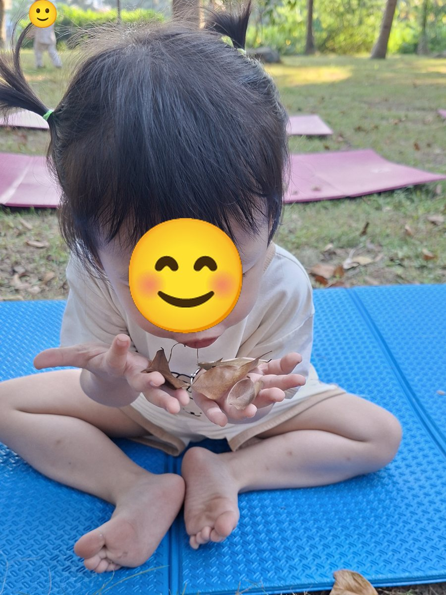
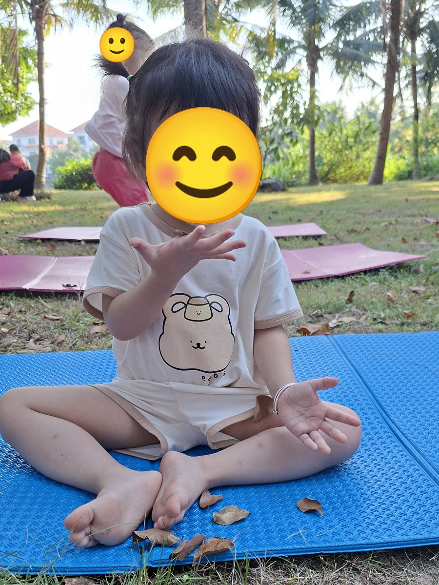

Chánh niệm
Phép thở mùa thu: thổi lá bay cùng bé 🍂


Mùa thu lá rơi nhiều, đó là món đồ chơi tuyệt vời cho một bài tập thở. Bé nhặt vài chiếc lá khô, đặt lên lòng bàn tay rồi thổi cho lá bay đi. Trò chơi nhỏ này giúp bé thở chậm lại một cách tự nhiên mà không cần giải thích gì nhiều.
Cách làm
- Cùng bé nhặt 2 đến 3 chiếc lá khô, nhỏ và nhẹ.
- Ngồi thoải mái, lưng thẳng, đặt lá lên hai lòng bàn tay mở ra trước mặt.
- Hít vào thật sâu bằng mũi, đếm 1, 2, 3.
- Thở ra thật chậm bằng miệng, thổi cho lá bay khỏi bàn tay.
- Nhặt lá lên và lặp lại 3 đến 5 lần.
Lợi ích cho bé
- 🌬️ Giúp bé thở chậm và sâu hơn.
- 🎯 Tăng khả năng tập trung: bé phải nhìn lá và điều khiển hơi thở.
- 🌿 Giúp bé bình tĩnh, thư giãn sau giờ chơi hay khi bé đang cáu.
Mẹo
Thử thách bé thổi thật nhẹ để lá chỉ rung rinh, rồi thổi mạnh hơn cho lá bay xa. Bé sẽ học được cách điều chỉnh hơi thở của mình mà vẫn thấy như đang chơi.